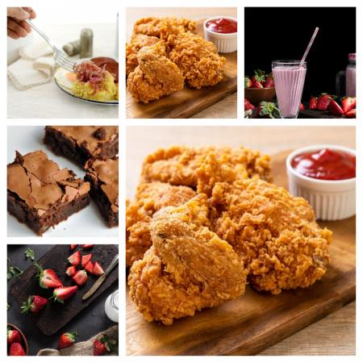

Sean bienvenidos a mi pagina en la cual estaremos observando 4 de mis recetas favoritas, la razon principal por la cual fueron estas recetas elegidas es por el impacto positivo en mi infancia y su facilidad al ser preparadas. Espero les gusten y que puedan realizar alguna:).
Las recetas que fueron anteriormente mencionadas son las mas comunes y sencillas en actividades grupales, es decir, ademas de ser muy deliciosas son muy usadas para eventos comunes, cualquier persona puede hacer estas recetas y lograr ser el centro de atencion con su preparacion. Es importante reconocer que el tiempo y dedicacion que le pongamos a la receta demostrara el resultado.
